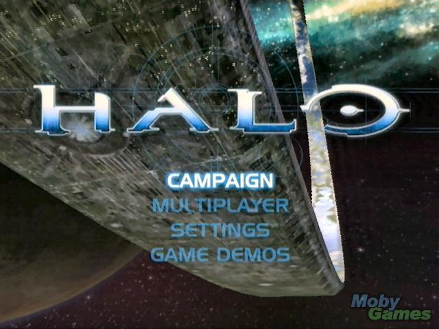

Meetings
This section includes all the 'after-action' reports of the Games Creators Club weekly meetings.
Meetings are held in the evenings at Kenilworth School during term time. The club currently has members from Year 7 to Year 11. If you are a student at Kenilworth School and you would be keen to join, let your form tutor know and they can put you in touch with the organisers.
Alternatively, you can follow along with the meetings and content using the articles posted here.
Let’s Get Moving
- Details
- Published on Tuesday, 03 February 2015 19:47
- Written by Edward Powell
- Hits: 31
In
this last session before half-term we’re going to add movement to the
player ship. We want this to have a physical feel to it so, unlike in
previous games, we’re going to use a simple thrust and drag model to
adjust the ship’s velocity instead of moving it directly. This should
give us the feeling that the ship is a physical object and it will
accelerate and decelerate rather than just instantly move – it should
also mean you can slide and ‘skid’ a bit, which will make the asteroid
avoidance a little more challenging
You will probably already realise that this is in no way how a spaceship would really behave in space (although with a couple of tweaks to our code we could make it so) but instead this is a conscious bending of reality to create interesting gameplay. Nearly all the games that you know will ‘muck’ with reality to produce good gameplay – otherwise you are into the world of simulators instead.
New Globals & Update Code
At the top of your code, we need to add the globally accessible variables to hold the new ship data:
global ship_velocity, ship_thrust, ship_drag
And we’ll need to give these a starting value in the GameReset() function. To modify global variables from within a function you will need to add them to the list of global variables declared at the beginning of the function – this lets python know that you intend to modify the shared global variables with these names, not create local independent copies (which is the default):
def GameReset():
global ship_position, ship_rotation, ship_thrust, \
ship_drag, ship_velocity
ship_thrust = 0
ship_drag = 0.95
ship_velocity = [0, 0]
Now all of the rest of our changes will occur in the UpdateGameScreen() function. Once we set the new ship position here, the rest of the game, including the ship drawing, can be left entirely as it already is. This is one of the key benefits of organising our game code into relatively self-contained functions. So in UpdateGameScreen we can read the up arrow key state immediately after our existing key reading code to modify the new thrust variable – up and down:
# If the up-arrow key is held down, increment the thrust
# If it is released, set the thrust back to zero
if current_keys[pygame.K_UP]:
ship_thrust -= 0.05
else:
ship_thrust = 0
So far, so good but the next bit is a bit trickier and will require some explanation during the session. The movement our ship needs to make is determined by an angle (the ship’s rotation) and a distance (set by the thrust value). But how do we turn this into the X and Y coordinate change that we know we need to position the ship in its new location? The answer is that we need a bit of trigonometry. The sin of the angle (which must be converted from degrees to radians) will give us the X component of our movement, and the cos of the angle will give us the Y component. If you have not done this yet in maths, then don’t worry I will explain at the session but just go ahead and add this code for now:
# Calculate the change in velocity - stored in the form [X,Y]
# For the X direction:
ship_velocity[0] += ship_thrust * math.sin(math.radians(ship_rotation))
# And the Y direction:
ship_velocity[1] += ship_thrust * math.cos(math.radians(ship_rotation))
Now we need to apply a multiplier to represent drag (even though we know that there would not be any in the vacuum of space!). This factor reduces the velocity proportionately each frame. Using a proportionate reduction is a useful technique because it slows the ship more at high speed and as the speed gets down towards zero it slows it less and less – this ‘feels’ like drag, which behaves similarly in the real world. When the velocity reduces to near zero, then the multiplier has virtually no effect and we don’t have to worry about preventing the velocity turning negative – which we would if we simply subtracted a fixed velocity each frame.
# Reduce the total velocities proportionally by a drag factor
ship_velocity[0] *= ship_drag
ship_velocity[1] *= ship_drag
Finally we can update the ship’s position using our calculated velocity:
# Update the ship's position using the [X,Y] velocities
ship_position[0] += ship_velocity[0]
ship_position[1] += ship_velocity[1]
You should be able to F5 and try out the new thrust at this point, but don’t fly off the edge of the screen!
Wrap Around
To sort out the ‘flying off into the abyss’ problem we need to add some wrap around code. You’ve probably seen this sort of thing in one of our previous games, but essentially we need to check the position of the ship each loop and ‘fix’ it if it has moved outside of our screen bounds. In Pong we simply prevented movement beyond the screen bounds, but here we are going to use a technique called ‘wrap around’. When we detect the ship has moved off one edge of the screen we’ll automatically move the ship back to the opposite side. The code looks like this:
# Wrap around the ship position if necessary
if ship_position[0] < 0:
ship_position[0] = screen_size[0]
if ship_position[0] > screen_size[0]:
ship_position[0] = 0
if ship_position[1] < 0:
ship_position[1] = screen_size[1]
if ship_position[1] > screen_size[1]:
ship_position[1] = 0
Give it a go now and see what you think of our ‘physical’ movement model. Try changing the drag value from 0.95 to 0.99 or 0.9 and see how that affects the movement. Can you work out what 3D surface we are simulating with this sort of wrap around – clue: it’s not a sphere…
Ship Rotation Using Transforms
- Details
- Published on Tuesday, 27 January 2015 15:57
- Written by Edward Powell
- Hits: 61

Previously we have ‘turned’ our sprites by swapping the sprite for completely different images for each facing direction. For this project we are going to use an alternative method. We can actually rotate just one sprite image within our code - using a ‘transform’. The result of this operation will be to create a new image surface containing our sprite orientated at new angle.
A Bit of Background
But lets start by adding a background image and the ship image as global objects (so that we can access them from within our functions). We need to declare these at the top of code using the global keyword.
global background_surface, ship_surface
We will need to load the images just once when our program first starts, so we can use the GameInit() function we created last week to add the following:
def GameInit():
global screen, background_surface, ship_surface
background_surface = pygame.image.load("Images/Background.png")
ship_surface = pygame.image.load("Images/PlayerShip.png")
pygame.init()
screen = pygame.display.set_mode((640, 480))
Now we are going to need two more global ‘data’ variables – ship position and rotation – so add these at the top of your code.
global ship_position, ship_rotation
ship_position = [320, 240]
ship_rotation = 0
Next we are going to create 2 crucial new functions UpdateGameScreen() and DrawGameScreen(). These will be called once every time we cycle around our game loop. The Update function is where we will handle player input (such as reacting to key presses or mouse movements), we’ll update the game data associated with our game objects (player position, for example), check for collisions and carry out any other game logic (like checking if a level is complete). Then the Draw function will simply deal with constructing the screen display from our drawable game objects – background, sprites, score text etc.
By keeping these parts of our code nicely separated we should find it much easier to navigate around and maintain our code as it grows.
def UpdateGameScreen():
global current_keys, ship_rotation
if current_keys[pygame.K_LEFT]:
ship_rotation += 2
if current_keys[pygame.K_RIGHT]:
ship_rotation -= 2
Now transforms are a great method for rotating, scaling and mirroring an image on the fly but they do have a ‘gotcha’. The orientated sprite will require a bigger image rectangle to contain it, so we will need to focus on a single centre point rather than relying on the bottom left corner. Our draw function needs to offset the position coordinate of the player ship using the centre of the rotated surface each time we draw. We use the centre point as our origin because, unlike a corner, it will remain consistent relative the image of the ship – try drawing the sprite using the rotated surface rectangle directly instead of the draw_centre calculation to see the problem for yourself.
def DrawGameScreen():
global screen
screen.blit(background_surface, (0,0))
rotated_surface = pygame.transform.rotate(ship_surface, ship_rotation)
surface_centre = rotated_surface.get_rect().center
draw_centre = [ship_position[0] - surface_centre[0], ship_position[1] - surface_centre[1]]
screen.blit(rotated_surface, draw_centre)
Finally we need to call our new update and draw functions (remember, at this stage we have only defined them, we haven’t actually called them), which we do inside of the GameLoop function:
def GameLoop():
global current_keys
pygame.time.Clock().tick(60)
for event in pygame.event.get():
if event.type == pygame.QUIT:
pygame.quit()
sys.exit()
current_keys = pygame.key.get_pressed()
UpdateGameScreen()
DrawGameScreen()
# flip the screen to show our drawing
pygame.display.flip()
You should now be able to rotate your ship using the left and right arrow keys. Next time we’ll look at how to implement some movement thrust.
Functions – The Building Blocks of Code
- Details
- Published on Wednesday, 21 January 2015 10:04
- Written by Edward Powell
- Hits: 201
GameLoop() walks into a bar to order a beer, but barman says “Sorry, you’ll have to use the function room.”
This term we’re going to start work on a new game. Much of the individual snippets of code will be the familiar from Pong. But this time we are going to structure the game quite differently by breaking it down into component parts, each of which perform a specific set of tasks. These sets of tasks are called functions.
Functions are a vital way of re-using bits of your code at different points in your program without having to write the code again and again. They also allow you to ‘see’ your program’s structure more clearly. Most of you will have already produced code that is getting too long for you to easily find where the bit you need to edit actually is. By dividing your code into functions you can find the bits you need more easily, and each bit of your code can be isolated and tested independently of other areas to try and eliminate errors more easily.
We’re going to start by defining two functions – one to initialise the game (GameInit), and a second to do one iteration of our game loop (GameLoop). Then we will call these functions to actually run the game.
Functions must be defined first – this does not actually run the function, it just lays out the code that will run when the function is call. In Python we do this using the def keyword then indent the code that forms the function definition in the same way that you would for a loop or conditional.
defFunctionName():
# code goes here in an indented block
The brackets () after the function name allow us to pass some variables to the function to work with. For now we will not need to pass any values because we will use globally accessible variables, but when you define and call the function you will need to include the brackets – despite the fact they are empty – as this allows Python to know that it is a function, not a variable, that you are referring to.
So here is our standard game layout (with all the same code snippets as we needed for Pong), but structured using functions:
import pygame, sys
# == (1) Create 'global' variables ==
# These are variables that every part of your
# code can 'see' and change
global screen, current_keys
# == (2) Define the functions for each task first ==
# == GameInit ==
# Put initialisation stuff here
# it is called just once
# at the beginning of our game
defGameInit():
global screen
pygame.init()
screen = pygame.display.set_mode((640,480))
# == GameLoop ==
# Put things that have to occur repeatedly
# here. It is called every frame
defGameLoop():
global current_keys
# Lock the timing to 60 frames per second
pygame.time.Clock().tick(60)
# Check for exit
for event in pygame.event.get():
if event.type == pygame.QUIT:
pygame.quit()
sys.exit()
# update our key states
current_keys = pygame.key.get_pressed()
# GameUpdate functions will go here
# GameDraw functions will go here
# flip the screen
pygame.display.flip()
# == (3) Call the functions to run the game ==
# We have only *defined* our functions above.
# Here we actually call them to make them happen
GameInit()
whileTrue:
GameLoop()
Hopefully you can already see that this makes it easier to understand, find & edit the bits of code do each task. As our game progressively becomes more complicated this will be very important!
Have a Happy Christmas and New Year!
- Details
- Published on Tuesday, 16 December 2014 15:38
- Written by Edward Powell
- Hits: 119
Next GCC session will be Wednesday 14 January 2015! I hope you all have a great holiday and get lots of gadgety-gizmos to show us all in the New Year. And don’t forget – as far as we’re concerned if you can’t program it, you don’t own it.
{kind=link}
E
Adding a Title Screen – Introducing Game States
- Details
- Published on Tuesday, 25 November 2014 13:01
- Written by Edward Powell
- Hits: 147

In this session we are going to add a simple start screen. This will show a title image and text and the game will only begin when the spacebar is pressed.
To do this we are going to think about the concept of ‘Game States’ that is, making your game loop do different things depending on what state your game is currently in – waiting to start a game, game in progress, game just ended, game paused etc. Pretty much any game you can think of must manage states like these – from the simplest mobile app to the top end XBox AAA title.
The basic management of game state is simple. We need to create a variable that holds a number which represents each state we want: 0 = game start, 1 = game running etc. Inside our game loop we can now check what game state we are in from this number and run different update + draw code for each case. To swap game states, we simply change the value of this number, Simples!
Adding the game state variable
At the beginning of our game (before the game loop starts) add the following variable:
# Game State
# 0 = Game Start Screen
# 1 = Game Running
game_state = 0
Now we need to go into our game loop and make our game-play specific update and draw code only run if the game_state variable is equal to 1. If it is 0, then we will add some new update (check for spacebar press) and drawing (blit some instructions) code for the game title screen instead.
We can do this check neatly with an if..elif conditional. The elif is short for (else if). While you can only pair an if check with only one else, you can have as many elif’s as you like. This is what we need because we can use this system to check for as many game state values as we need. Just after the code where we fill the pressed_keys list (everything in the game loop before then will be needed regardless of the game state we are in) add your new conditional check:
# === Update Section ====
# According to game state
# Game start state
if game_state == 0:
if pressed_keys[pygame.K_SPACE]:
game_state = 1
# Game running state
elif game_state == 1:
...
...
The dots indicate where your previous code should go; be very careful with your indenting – remember, this is what determines which code is ‘inside’ each conditional block!
This code now runs two different updates, depending on the game state. In state 0 (game start screen) we just check for the spacebar press and set the state to 1 (game running) if we detect it. In game state 1, we just run our normal game update code as previously. We can repeat this later in the game loop for the drawing code too:
# According to game state:
# game start screen
if game_state == 0:
title_text = score_font.render("Press Spacebar to Start", 1, (255,255,255))
screen.blit(title_text, (width/2 - title_text.get_width()/2, height/2 - title_text.get_height()/2))
elif game_state == 1:
That’s it! Now you have conditional update & draw sections to your main game loop.
Next steps
First, have a go at improving your title screen:
- Blit a background image
- Create some new font objects with different sizes
- Add your game’s name as a title in a bigger font
- Adding some instructions in a smaller font
Now have a go at adding a Game Over game state and screen if either player manages to score 3 points more than their opposition.